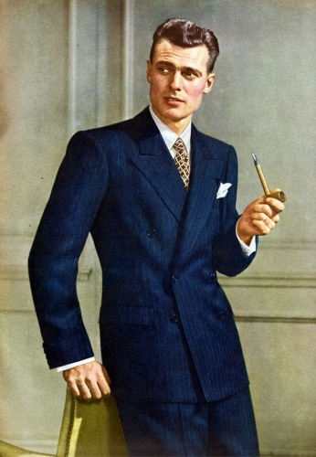

Es un gran honor estar aquí ante ustedes esta noche, quizás como el gran maestro Riccardo Mutti no estoy acostumbrado a estar ante un público sin orquesta tras de mi, pero haré lo que pueda en mi desarrollo de esto. Me quedé toda la noche en vela, anoche, pensandoqué podía decir aquí, en esta asamblea de distinguidas personas. Y después de comerme todas las barras de chocolate.
Pero ahora estoy contando algo que yo nunca había contado nunca en público. Esos seis acordes. Esa pauta de sonido de la guitarra aquella ha sido la base de todas mis canciones.
Muchas gracias señoras y señores.